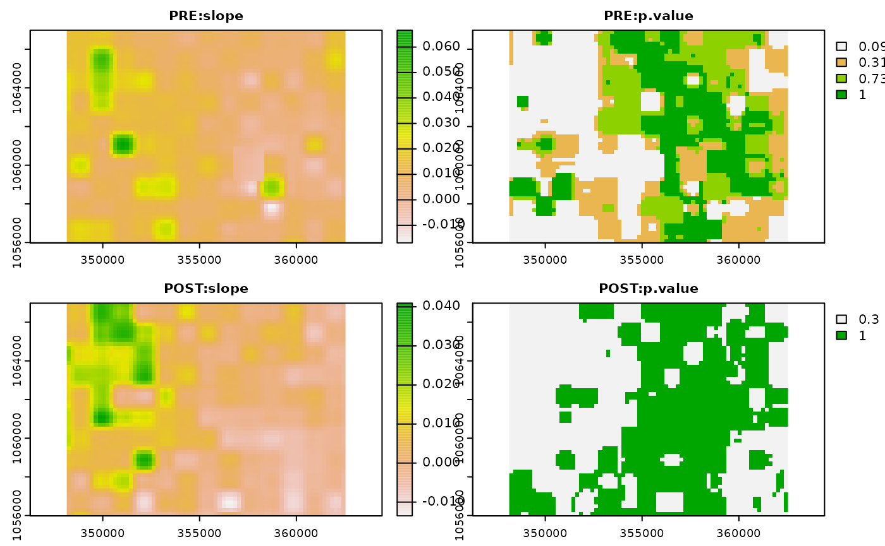

trends.RmdThis tool measures the rate of change in vegetation productivity over time, based on vegetation indices from multi-temporal satellite observations. It calculates a linear regression at the pixel level to measure the trajectory of change in vegetation productivity over time for the period under analysis. A Mann-Kendall non-parametric significance test is then applied. This allows the user to consider, i.e. to map only significant changes that show a certain p-value (e.g. ≤ 0.05). Positive significant slopes would indicate potential improvement (e.g. vegetation gain), while negative significant slopes could be indicative of degradation (vegetation loss). Please note that it is always recommended to cross check and validate the results from this assessment with in-situ measurements, if available.
In the following we will show how to calculate the trend in a time-series of vegetation indices and how to compare two different epochs, e.g. pre- and post-intervention period As a prerequisite we assume that you have already calculated a dense time-series of the index of your choice for the relevant timeframes. The example we are presenting here might not make a lot of sense of a analytic level, but it is only meant to introduce the functionality. Let’s get started by reading in our dense NDVI time-series and separate it into a rather random pre- and post-intervention period
library(mapme.vegetation)
library(stringr)
library(sf)
#> Linking to GEOS 3.8.0, GDAL 3.0.4, PROJ 6.3.1
library(terra)
#> terra version 1.3.22
ndvi_files = s2_files = list.files(system.file("extdata/filled", package = "mapme.vegetation"), ".tif", full.names = T)
bands = "NDVI"
times = str_sub(basename(ndvi_files), -14, -5)
aoi = st_read(system.file("extdata", "exp_region_wgs.gpkg", package = "mapme.vegetation"), quiet = T)
aoi_utm = st_transform(aoi, st_crs(32638))
aoi_utm$id = 1
bbox = st_bbox(aoi_utm)
pre = ndvi_files[1:4]
post = ndvi_files[5:7]
times_pre = times[1:4]
times_post = times[5:7]
rundir = file.path(tempdir(), "mapme.vegetation")
dir.create(rundir, showWarnings = F)We will have to process each of these periods separately since the function will try to fit a trend for all the available time-steps at once. By default the trend will be estimated using the trend::mk.test() function which fits a simple linear trend. Two values are returned, that is the estimate of the slope of the linear trend as well as the p.value. Via the argument filter_p we can exclude pixels below a certain threshold. However, we will not apply this in this tutorial as we do not expect to find significant trends in this rather random time periods.
trend_pre = trend_cube(files = pre,
bands = bands,
times = times_pre,
dx = 200,
dy = 200,
dt = "P14D",
srs = "EPSG:32638",
after = times_pre[1],
before = times_pre[4],
bbox = bbox,
aggregation = "max",
resampling = "cubic",
chunking = c(4, 256, 256),
outdir = rundir,
label = "pre_")
#> A data cube view object
#>
#> Dimensions:
#> low high count pixel_size
#> t 2017-05-01 2017-06-25 4 P14D
#> y 1055984.8569279 1066984.8569279 55 200
#> x 348138.569534966 362538.569534966 72 200
#>
#> SRS: "EPSG:32638"
#> Temporal aggregation method: "max"
#> Spatial resampling method: "cubic"
trend_post = trend_cube(files = post,
bands = bands,
times = times_post,
dx = 200,
dy = 200,
dt = "P14D",
srs = "EPSG:32638",
after = times_post[1],
before = times_post[3],
bbox = bbox,
aggregation = "max",
resampling = "cubic",
chunking = c(3, 256, 256),
outdir = rundir,
label = "post_")
#> A data cube view object
#>
#> Dimensions:
#> low high count pixel_size
#> t 2017-06-26 2017-08-06 3 P14D
#> y 1055984.8569279 1066984.8569279 55 200
#> x 348138.569534966 362538.569534966 72 200
#>
#> SRS: "EPSG:32638"
#> Temporal aggregation method: "max"
#> Spatial resampling method: "cubic"Let’s visualize the trend results for both the pre- and post intervention period. Note that the first layer returned by the default trend function is the slope of the linear trend while the second layer defaults to the p-value.
pre = rast(file.path(rundir, "pre_2017-05-01.tif"))
names(pre) = c("PRE:slope", "PRE:p.value")
post = rast(file.path(rundir, "post_2017-06-26.tif"))
names(post) = c("POST:slope", "POST:p.value")
comp = c(pre,post)
plot(comp)
Having calculated the NDVI slope for both time periods, we now might be interested in learning the differences between these two. The {mapme.vegetation} package comes with a function called compare_epochs() for just that. It allows the pixel-wise comparison between two rasters. Multiple layers are understood as a time dimension and a suitable temporal aggregation method can be chosen before the comparison is conducted. User’s are expected to specify one simple comparison operator (e.g. + / - / : / * ) and the order of the comparision (which epoch comes first). In our example, let’s calculate the fraction of the slope we observe during the post period in relation to the pre period. Values below one will indicate pixels which show a smaller slope in the post intervention period, while pixels with values greater one will indicate areas with greater slopes compared to the pre-intervention period. The function excepts either character strings pointing to raster files or spatRaster objects.
(ep_comp = compare_epochs(epoch1_files = pre$`PRE:slope` ,
epoch2_files = post$`POST:slope`,
order = c(2,1),
stat = "/"))
#> class : SpatRaster
#> dimensions : 55, 72, 1 (nrow, ncol, nlyr)
#> resolution : 200, 200 (x, y)
#> extent : 348138.6, 362538.6, 1055985, 1066985 (xmin, xmax, ymin, ymax)
#> coord. ref. : +proj=utm +zone=38 +datum=WGS84 +units=m +no_defs
#> source : memory
#> name : POST:slope
#> min value : -165.7377
#> max value : 797.6311
plot(ep_comp)We do not see much but why? Let’s inspect the value range.
That is interesting! There is a single pixels that shows a difference in NDVI between the pre- and post-intervention period of up to 80,000% (note that you have to multiply with 100 to get percent). Because of that very large value range we don’t see much when we plot the data. Anyway, a difference that large is highly implausible. The main reason is that our comparison between pre- and post-intervention does not make any sense. The split into the two different periods as well as the trend calculation based only on 3 or 4 data points is not very sensual. However, we showcased the functionality of the {mapme.vegetation} package to calculate and compare trends between different epochs as these can be used in real world analysis of project evaluations.